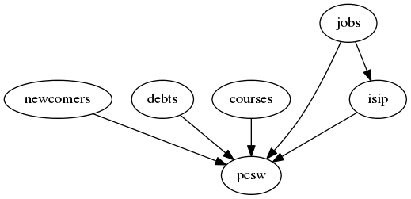

20121011¶
Nur ein ClientDetail¶
Ich habe verstanden, dass die drei “großen” Kliententabellen (Allgemein, DSBE und Neuanträge) nicht jede ihr eigenes Detail haben dürfen. Es ist zu irritierend, wenn ein DSBE-Benutzer nicht alle Reiter sieht, bloß weil er über die “falsche” Liste auf den Klienten gekommen ist.
In ClientDetail waren noch einige konzeptuelle Mängel:
- Reiter “Begleitungen” und “Neuzugänge” sind jetzt einer.
- “Interim-Agenturen” und “Integrationsphase” wieder zurück in den Reiter “Status”
- Die Tabelle “Verfügbare Begleiter” soll nur Daten enthalten, wenn Stadium “Begleitet” ist.
Arbeitverlauf Klienten¶
- Das Feld workflow_buttons (“Arbeitsverlauf”) sieht jetzt intuitiver aus.
- Im Reiter “Sonstiges” kann man jetzt das Stadium eines Klienten manuell verändern.
Es gibt noch eine Menge “Teufel im Detail” beim Workflow. Hier einige neue Regeln:
- Ein Neuantrag kann keine Begleitungen haben. (Ein Klient mit Begleitungen, selbst abgeschlossene, kann nicht wieder zum Neuantrag werden. Höchstens zu einem Ehemaligen.)
- Wenn ein Klient ins Stadium Ehemalig wechselt, werden automatisch alle laufenden Begleitungen beendet. Ein Ehemaliger kann keine laufenden Begleitungen haben.
- Nur Benutzer mit einem unleeren Feld Begleitungsart (Dienst) in den Benutzereinstellungen dürfen manuell Begleitungen erstellen.
- Wenn man ein Coaching manuell erstellt, wird Beginndatum aufs Tagesdatum und Begleitungsart (Dienst) auf die des Benutzers ausgefüllt.
(Komplette Liste der Regeln sammeln wir unter /user/clients)
Customizing create permissions¶
Die Regel “Nur Benutzer mit einem unleeren Feld Begleitungsart (Dienst) in den Benutzereinstellungen dürfen manuell Begleitungen erstellen.” war noch mal wieder was Neues für Lino.
Actor.create_required war unnütz und fliegt raus.
Dafür haben wir jetzt lino.core.actors.Actor.get_create_permission()
Interdependenz von Modulen¶
Durch obige Änderung musste ich mir folgende Gedanken machen.
Um zirkuläre oder partielle Imports zu vermeiden, muss man sich über die Hierarchie der Module im Klaren sein.
Ein partieller Import wird von Python nicht als Fehler gewertet und kann gerade deshalb zu verwirrenden und schwer kapierbaren Nebenwirkungen führen.
Faustregel: In einem Django-Projekt sollten die modules-Module
der installierten Anwendungen (INSTALLED_APPS)
sich nicht beidseitig importieren, weil das zu partiellen Imports führt,
und die bringen Django durcheinander.
Zum Beispiel das gestern beobachtete
Problem der verfälschten Ausführungsreihenfolge
beim loaddata der fixtures kam
daher, dass pcsw und newcomers sich gegenseitig importierten.
pcsw ist das “Hauptmodul” in lino-welfare und darf deshalb die anderen Module (newcomers) nicht importieren.

Oder wenn ich die modlib-Module mit reinnehme:
![digraph foo {
subgraph cluster_modlib {
label = "lino.modlib";
outbox contacts notes uploads households accounts cal countries properties postings;
}
subgraph cluster_welfare {
label = "lino_welfare";
pcsw newcomers debts isip jobs courses;
}
households -> contacts;
pcsw -> contacts;
pcsw -> notes;
pcsw -> uploads;
pcsw -> households;
newcomers -> pcsw ;
newcomers -> outbox;
debts -> pcsw;
debts -> accounts;
debts -> households;
debts -> properties;
courses -> pcsw ;
isip -> pcsw ;
isip -> cal ;
cal -> contacts;
cal -> postings;
cal -> outbox;
jobs -> contacts;
jobs -> properties;
jobs -> countries;
contacts -> countries;
jobs -> isip;
jobs -> pcsw;
overlap=false;
}](../../_images/graphviz-e49b2be270dca106ce3ace5b333489fb090de809.png)
Miscellaneous¶
Das Speichern von eigenen Einstellungen ging nicht:
Http404 users.MySettings has no url action u'' TRACEBACK: ... File "t:\hgwork\lino\lino\ui\extjs3\views.py", line 789, in put ar = action_request(app_label,actor,request,data) File "t:\hgwork\lino\lino\ui\extjs3\views.py", line 92, in action_request raise http.Http404("%s has no url action %r" % (rpt,action_name))Das war ein Bug im JS-Code: FormPanel.save() setzte URL_PARAM_ACTION_NAME auch dann wenn es leer war.
FieldSets haben neuerdings keinen Rahmen mehr. Habe noch nicht rausgefunden, woran das liegt.
In ext_ui war der folgende Code:
if de.slave_grid_format == 'grid': if not de.parameters: kw.update(hide_top_toolbar=True) e = ext_elems.GridElement(lh,name,de,**kw) return e
Da wurde also die topToolbar von slave grids nicht wie üblich deaktiviert, wenn die Tabelle Paremter hatte. Aber dann waren die Parameter doch nicht nutzbar, weil das [Parameter]-Panel nur in einem main_item existiert. Also weg damit. hide_top_toolbar wird immer auf True gesetzt. (Irgendwann wird es eine Kundenanfrage geben, dass man in gewissen explizit angegebenen slavegrids die topToolbar doch haben will (z.B. wenn es die einzige Tabelle ist), aber das ist was anderes, da lass ich momentan noch die Finger von)